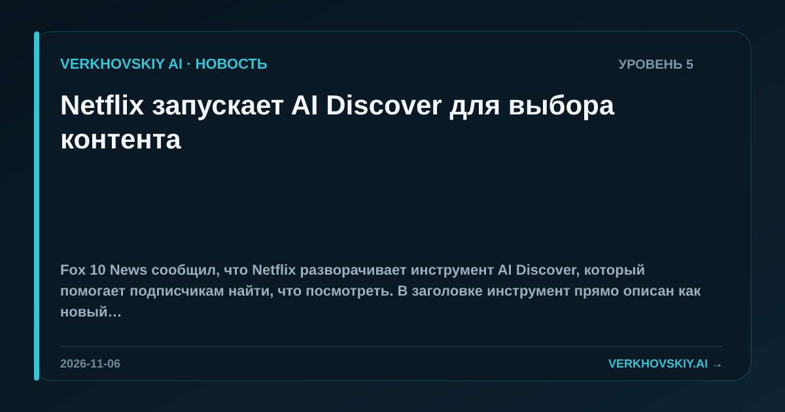

Netflix запускает AI Discover для выбора контента
Fox 10 News сообщил, что Netflix разворачивает инструмент AI Discover, который помогает подписчикам найти, что посмотреть. В заголовке инструмент прямо описан как новый AI-инструмент рекомендаций.